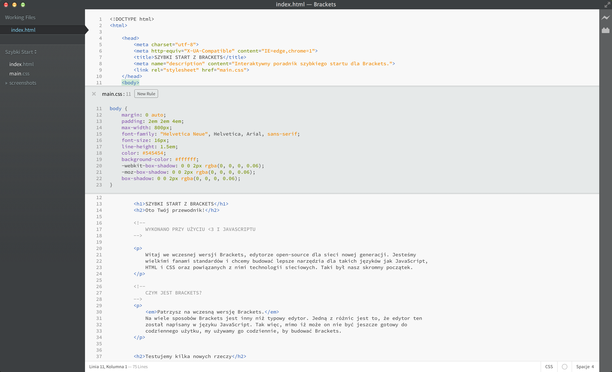

Witaj we wczesnej wersji Brackets, edytorze open-source dla sieci nowej generacji. Jesteśmy wielkimi fanami standardów i chcemy budować lepsze narzędzia dla takich języków jak JavaScript, HTML i CSS oraz powiązanych z nimi technologii sieciowych. Taki był nasz skromny początek.
Patrzysz na wczesną wersję Brackets. Na wiele sposobów Brackets jest inny niż typowy edytor. Jedną z różnic jest to, że edytor ten został napisany w języku JavaScript. Tak więc, mimo iż może on nie być jeszcze gotowy do codziennego użytku, my używamy go codziennie, by budować Brackets.
In order to edit your own code using Brackets, you can just open the folder containing your files. Brackets treats the currently open folder as a "project"; features like Code Hints, Live Preview and Quick Edit only use files within the currently open folder.
Once you're ready to get out of this sample project and edit your own code, you can use the dropdown in the left sidebar to switch folders. Right now, the dropdown says "Getting Started" - that's the folder containing the file you're looking at right now. Click on the dropdown and choose "Open Folder…" to open your own folder. You can also use the dropdown later to switch back to folders you've opened previously, including this sample project.Podczas edycji HTMLa użyj skrótu Cmd/Ctrl + E aby otworzyć szybki wbudowany edytor, który wyświetli wszystkie powiązane style CSS. Wykonaj modyfikacje w kodzie CSS, wciśnij ESC i wróć do edycji HTML. Możesz również pozostawić wbudowany edytor otwarty, tak aby stał się częścią edytora HTML. Jeśli wciśniesz ESC poza obszarem szybkiego edytora, jego wszystkie okna zostaną zamknięte. Koniec z przełączaniem się pomiędzy dokumentami i byciem wyrwanym z kontekstu.
Chcesz go zobaczyć w akcji? Umieść kursor w tagu i naciśnij Cmd/Ctrl + E. Szybki edytor CSS pojawi się nad tym tagiem. Po prawej stronie zobaczysz listę wszystkich reguł, które są powiązane z tym tagiem. Przełączaj się pomiędzy regułami używając skrótu Alt + Góra/Dół aby znaleźć ten, który chcesz edytować. Możesz użyć tego samego skrótu w kodzie JavaScript, aby zobaczyć kod funkcji, którą przywołujesz, poprzez umieszczenie kursora na nazwie funkcji. W ten sam sposób możesz również otworzyć narzędzie wybierania koloru. Po prostu umieść kursor na dowolnym kolorze zapisanym w formacie hex, rgb lub hsl.
Na razie wbudowany szybki edytor nie może być niezagnieżdżony, więc możesz używać go jedynie w "pełnowymiarowym" edytorze.
Zapewne znany Ci jest taniec w stylu "zapisz/przeładuj", który wykonywaliśmy przez ostatnie lata. Dokonujesz zmian w edytorze, zapisujesz zmiany, przełączasz się do przeglądarki i odświeżasz stronę, by w końcu zobaczyć rezultat Twojej pracy. Z Brackets taki taniec nie jest konieczny.
Brackets utworzy połączenie na żywo z Twoją lokalną przeglądarką i będzie jej przekazywał wszelkie zmiany w CSS. Być może już dzisiaj korzystasz z podobnego rozwiązania przy użyciu narzędzi w przeglądarce, jednak z Brackets nie ma potrzeby wklejania kodu CSS z powrotem do edytora. Twój kod działa w przeglądarce, ale żyje w edytorze.
Brackets makes it easy to see how your changes in HTML and CSS will affect the page. When your cursor is on a CSS rule, Brackets will highlight all affected elements in the browser. Similarly, when editing an HTML file, Brackets will highlight the corresponding HTML elements in the browser.
Jeśli posiadasz zainstalowaną przeglądarkę Google Chrome, możesz wypróbować to już teraz. Kliknij ikonkę błyskawicy (stąd nazwa: Błyskawiczny Podgląd) w prawym górnym rogu lub naciśnij skrót Cmd/Ctrl + Alt + P. Kiedy Błyskawiczny Podgląd zostanie włączony w dokumencie HTML, wszystkie połączone z nim pliki CSS mogą być edytowane w czasie rzeczywistym. Ikona zmieni kolor z szarej na złotą gdy Błyskawiczny Podgląd nawiąże połączenie z Twoją przeglądarką. Teraz umieść kursor na tagu i wciśnij Cmd/Ctrl + E aby otworzyć zdefiniowane style CSS dla tego tagu. Spróbuj zmienić rozmiar obramowania z 10px do 20px lub zmienić kolor tła z "transparent" na "hotpink". Jeśli masz umieszczone okna przeglądarki i Brackets obok siebie zobaczysz, że zmiany są natychmiast uwzględniane w przeglądarce. Nieźle, co?Na dzień dzisiejszy Błyskawiczny Podgląd działa jedynie dla plików CSS. Aktualnie pracujemy nad tym, aby dodać obsługę plików HTML i JavaScript. W aktualnej wersji zmiany w plikach HTML lub JavaScript są automatycznie uwzględniane w momencie zapisu. Błyskawiczny Podgląd działa jedynie z Google Chrome. Pragniemy wprowadzić tą funkcję we wszystkich najważniejszych przeglądarkach i mamy nadzieję na współpracę ze strony autorów tych przeglądarek, by stało się to faktem.
For those of us who haven't yet memorized the color equivalents for HEX or RGB values, Brackets makes it quick and easy to see exactly what color is being used. In either CSS or HTML, simply hover over any color value or gradient and Brackets will display a preview of that color/gradient automatically. The same goes for images: simply hover over the image link in the Brackets editor and it will display a thumbnail preview of that image.
To try out Quick View for yourself, place your cursor on the tag at the top of this document and press Cmd/Ctrl + E to open a CSS quick editor. Now simply hover over any of the color values within the CSS. You can also see it in action on gradients by opening a CSS quick editor on the tag and hovering over any of the background image values. To try out the image preview, place your cursor over the screenshot image included earlier in this document.In addition to all the goodness that's built into Brackets, our large and growing community of extension developers has built hundreds of extensions that add useful functionality. If there's something you need that Brackets doesn't offer, more than likely someone has built an extension for it. To browse or search the list of available extensions, choose File > Extension Manager… and click on the "Available" tab. When you find an extension you want, just click the "Install" button next to it.
Brackets jest projektem open-source. Web developerzy z całego świata angażują się, by budować coraz to lepszy edytor kodu. Daj nam znać co o nim sądzisz, podziel się swoimi pomysłami lub dodaj coś bezpośrednio do projektu.